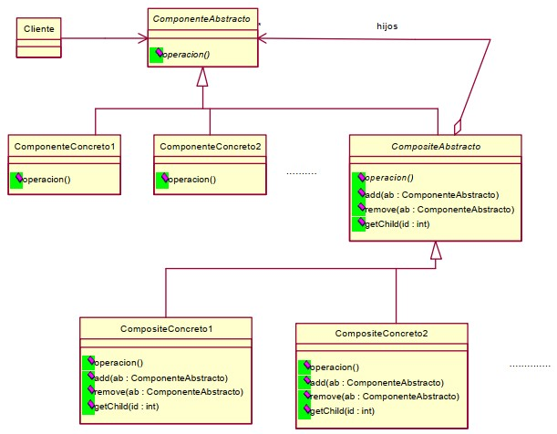

COMPOSITE
Objetivo
Permite construir objetos complejos mediante composición recursiva de objetos similares. El patrón Composite también permite que los objetos del árbol sean manipulados por un manejador consistente, para requerir todos los objetos hay una superclase o un interfaz común. Permite a los clientes tratar de la misma manera tanto a objetos individuales como a compuestos.
Aplicabilidad
- Tienes un objeto complejo que quieres descomponer en una jerarquía de objetos.
- Quieres minimizar la complejidad del conjunto de la jerarquía minimizando el número de tipos diferentes de objetos hijo en el árbol que los objetos compuestos necesitan para formarse.
- Los clientes no conocen la diferencia entre los objetos inidividuales y los grupos.
Solución
Minimiza la complejidad de un objeto composite organizado en jerarquias parte-todo proporcionando una superclase para todos los objetos de la jerarquía y una superclase abstracta para todos los composites de la jerarquia.
A continuación se muestra el diagrama de clases del patrón Composite:
Ahora mostramos las descripciones de las clases que participan en este patrón:
ComponenteAbstracto El ComponenteAbstracto es una clase abstracta y la superclase común de todos los objetos que están en el árbol de objetos para formar un objeto composite. Los objetos composite normalemente tratan a los objetos que ellos contienen como instancias del ComponenteAbstracto. Los clientes de los objetos compositen los tratan normalmente como instancias del ComponenteAbstracto.
ComponenteConcreto1, ComponenteConcreto2, .... Las instancias de estas clases son utilizadas como hojas en la organización del árbol. Una hoja no tiene hijos. Definen el comportamiento de los objetos primitivos.
CompositeAbstracto El CompositeAbstracto es la superclase abstracta de todsos los objetos composite que participant en el patrón Composite. Define el comportamiento de los objetos que tienen hijos. Almacena los hijos. El CompositeAbstracto define y proporciona las implementaciones por defecto para los métodos para manejar los componentes de los objetos composite. El método add añade un componente a un objeto composite. El método remove borra un componente del objeto composite. El método getChild retorna una referencia a un objeto componente de un objeto composite.
CompositeAbstracto El CompositeAbstracto es la superclase abstracta de todsos los objetos composite que participant en el patrón Composite. Define el comportamiento de los objetos que tienen hijos. Almacena los hijos. El CompositeAbstracto define y proporciona las implementaciones por defecto para los métodos para manejar los componentes de los objetos composite. El método add añade un componente a un objeto composite. El método remove borra un componente del objeto composite. El método getChild retorna una referencia a un objeto componente de un objeto composite.
Cliente Manipula los objetos en la composición a través de la interfaz de la clase ComponenteAbstracto.
La clase abstracta composite CompositeAbstracto no es necesaria cuando sólo hay una clase concreta composite CompositeConcreto
Consecuencias
- Hay una jerarquía de objetos tan complejos como se requieran.
- El cliente es simple. Los objetos cliente de un ComponenteAbstracto pueden tratar simplemente con un ComponenteAbstracto, sin tener que conocer a ninguna de las subclases del ComponenteAbstracto.
- Si un cliente llama a un método de un ComponenteAbstracto que es supuestamente realizar una operación y el objeto ComponenteAbstracto es un objeto CompositeAbstracto, entonces delegará esta operación a los objetos ComponenteAbstracto que lo constituyen. Análogamente, si un objeto cliente llama a un método de un objeto ComponenteAbstracto que no es un CompositeAbstracto y el método requiere alguna información contextual, entonces el ComponenteAbstracto delegará la petición de información contextual a su padre.
- El principal beneficio del patrón Composite es que permite a los clientes de un objeto composite y a los objetos que lo constituyen desconocer la clase específica de los objetos con los que tratan.
- Se simplifica la adición de nuevos objetos.
- El diseño es más general.
- Se dificulta el control de los tipos de composiciones válidas. Deben hacerse chequeos en tiempo de ejecución.
Implementación
Si las clases que participan en el patrón Composite implementan alguna operación por delegación de estas a sus objetos padre, entonces el mejor modo para onservar velocidad y simplicidad es teniendo en cada instancia del ComponenteAbstracto una referencia a su padre. Es importante implementar el puntero al padrede una forma que se asegure la consistencia entre padre e hijo. Siempre debería ser que un ComponenteAbstracto identifiquea un CompositeAbstracto como su padre, si y sólo si, el CompositeAbstracto lo identifica como uno de sus hijos. La mejor forma para obligar esto es modificar las referencias al padre y al hijo solamente en la clase CompositeAbstracto añadiendo y quitando métodos.
Compartir componentes entre muchos padres utilizando el patrón Flyweight es una forma de ahorrar memoria. Sin embargo, es difícil compartir componentes correctamente manteniendo las referencias a los padres.
La clase CompositeAbstracto podría proporcionar una implementación por defecto para manejar los hijos de los objetos composite. Sin embargo, es muy común que los composite concretos sobrescriban esta implementación.
El patrón Composite es algunas veces implementado con clases que no comparten una superclase común, pero comparten un interface común.
Si una clase concreta composite delega una operación a los objetos que lo constituyen, entonces cachear el resultado de la operación podría mejorar el rendimiento. Si una clase concreta composite cachea el resultado de una operación, entonces es importante que los objetos que constituyen el compoiste notifiquen al objeto composite que pueden ser invalidos sus valores cacheados.
Usos en el API de Java
El paquete java.awt.swing contiene un buen ejemplo del patrón Composite. Su clase Component cubre el papel del ComponenteAbstracto. Su clase Container cubre el papel del CompositeAbstracto Tiene un número de clases en el papel ComponenteConcreto, incluyendo Label, TextField, y Button. Enre las clases en el papel CompositeConcreto se incluyen Panel, Frame, y Dialog.
Patrones relacionados
Chain of Responsibility El patrón Chain of Resposibility puede ser combinado con el patrón Composite para añadir links del hijo al padre (para propagar responsabilidades hacia arriba), de tal forma que, los hijos puedan conseguir información sobre un progenitor sin tener que conocer que progenitor proporciona la infomación.
Decorator :Generalmente se usan juntos.
Flyweight :Para compartir componentes, cuando no haya referencias a los padres.
Iterator :Para recorrer los hijos en un composite.